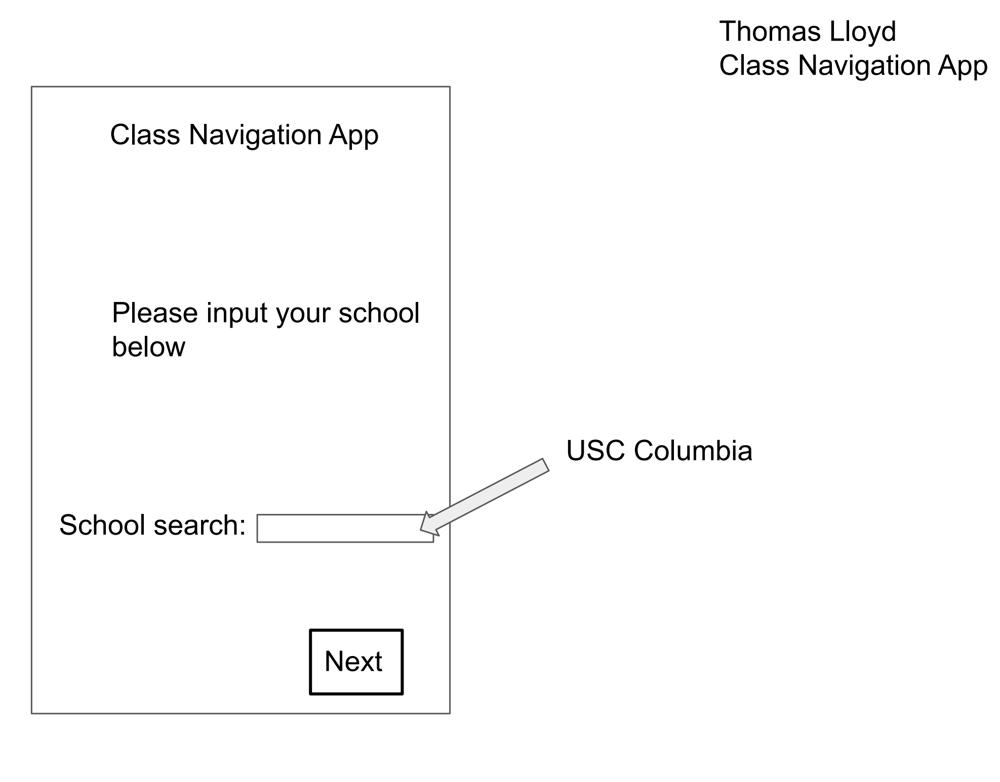
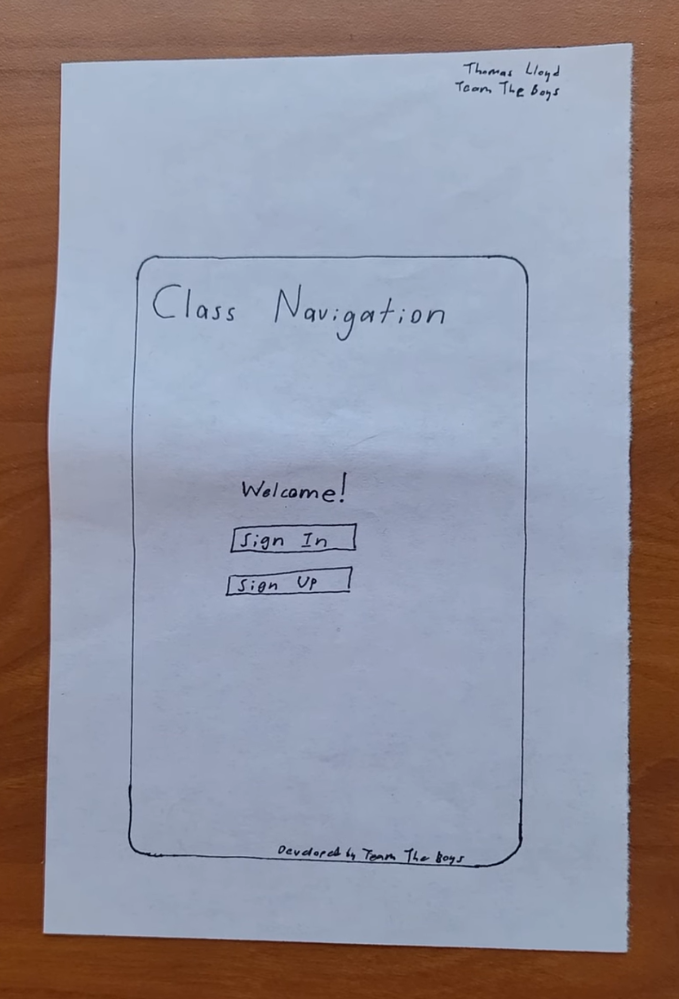
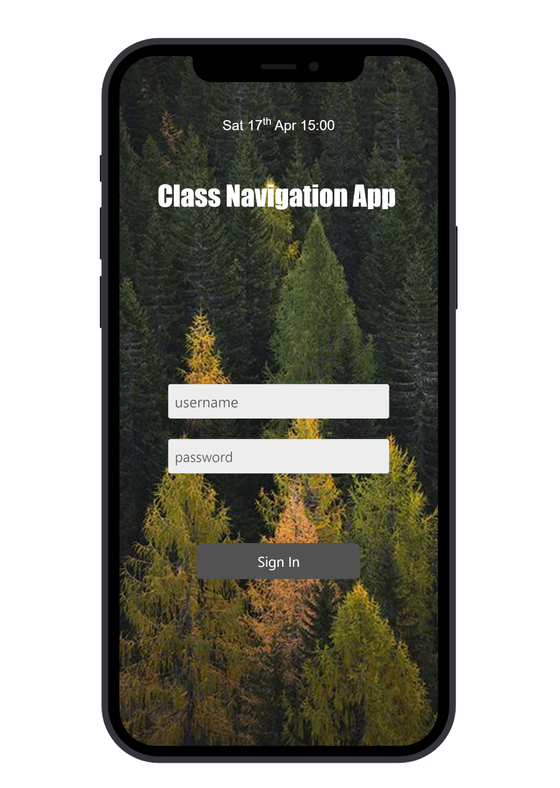

Problem Statement: Class Navigation

College students are often pressed for time and need a way to know when to promptly leave their dorms, the library, etc to arrive at their next class on time. Our solution would be to provide a way for users to be updated with times and best walking paths to arrive for their classes on time.
Affinity Diagram: Class Navigation

Team The Boys worked on this Affinity Diagram together to gather our thoughts and ideas about our Schedule Navigation app.
Persona: 3 Personas for the Class Navigation App

Personas for the typical Class Navigation App user.
Storyboard: Class Navigation

Storyboards for various Class Navigation App users.
Sketches: Class Navigation App
Rough ideas of how the application may look.
Paper Prototype: Class Navigation App
A paper walkthrough of every screen in my scenario for the class navigation app.
Hi-Fi Prototype: Class Navigation App
A detailed prototype of every screen in our Class Navigation app.